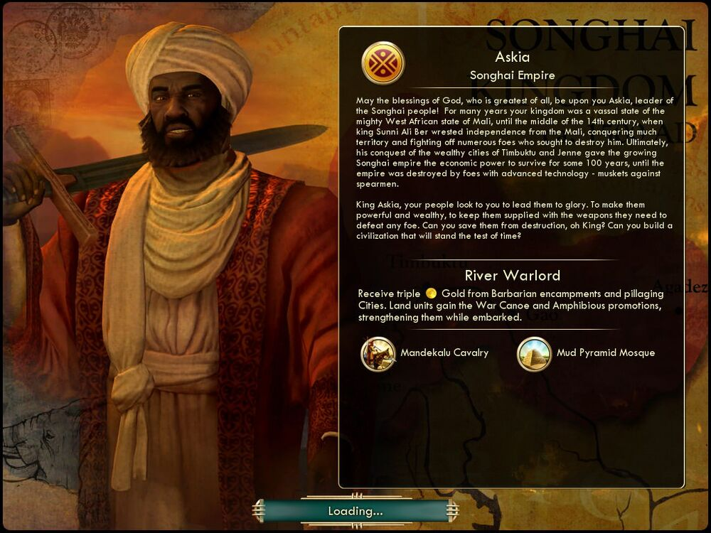

아스키아 Askia송가이 Songhai |
|  |
| 위대한 하느님의 축복이 송가이 민족의 지도자인 아스키아 그대와 함께하기를! 오랫동안 그대의 왕국은 서아프리카의 막강한 제국 말리의 속국이었으나, 14세기 중반 수니 알리 베르 왕이
말리로부터 독립을 쟁취하고 많은 적과 싸워 이기며 넓은 영토를 점령했습니다. 부유한 도시 팀북투와 젠네를 정복하면서 얻은 경제력으로, 송가이 제국은 100여 년을 지속하다가 발전된
기술력을 지닌 적의 손에 멸망했습니다. 머스킷을 든 병사를 창병이 상대해야 했으니까요.
아스키아 왕이여, 백성은 그대가 송가이를 영광으로 이끌어주리라 기대하고 있습니다. 그대가 송가이에 권세와 부를 안겨주고, 어떤 적이라도 무찌를 수 있는 무기를 주리라 기대하고 있습니다. 오 왕이여, 그들을 멸망으로부터 구하고 세월의 시련을 이겨낼 문명을 건설해 주시겠습니까? |
| 속성 | |
|---|---|
| 특성 | 수로의 지배자 (River Warlord) 야만인 주둔지나 도시를 약탈할 때 얻는 금이 세 배로 증가합니다. 지상 유닛은 전투용 카누 및 수륙 양용 승급을 얻어 승선 시 더욱 강력해집니다. |
| 고유유닛 | 만데칼루 기병대 (Mandekalu Cavalry) 기사 대체 유닛입니다. 도시 공격 시 페널티가 없습니다. 일반 기사보다 생산비용이 더 낮습니다.(120→110) |
| 고유건물 | 진흙 피라미드 모스크 (Mud Pyramid Mosque) 사원 대체 건물입니다. 유지비가 없습니다(사원은 2). 신앙 이외에도 추가 문화 +2를 줍니다. |
| 시작지점 | 툰드라를 피해서 |